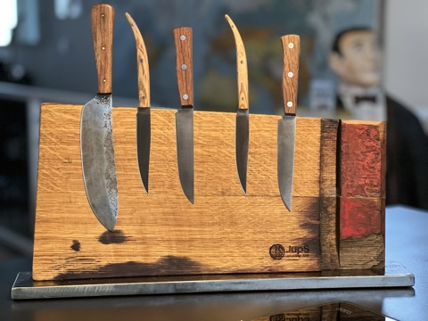
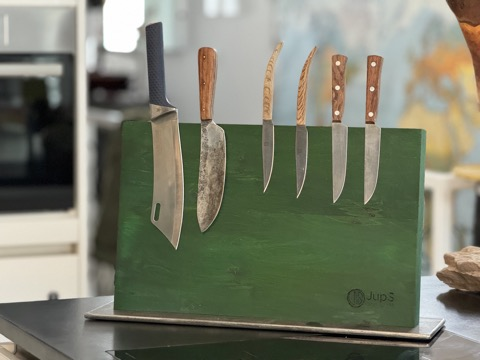
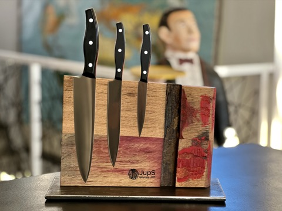
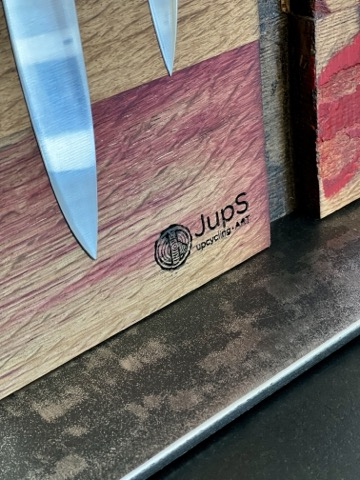
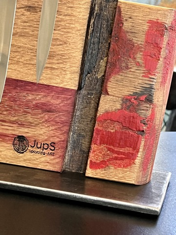
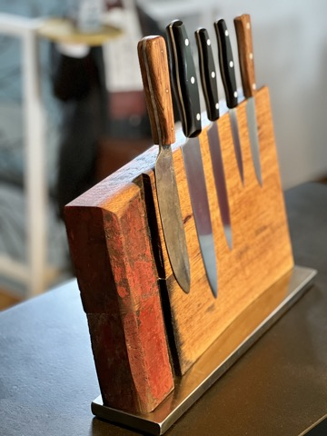
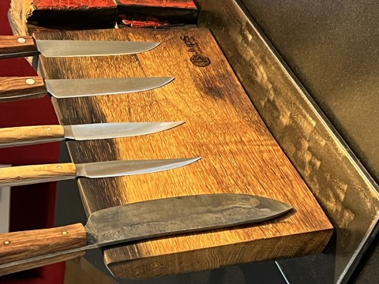
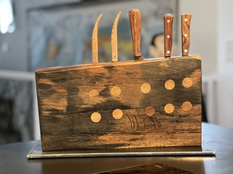
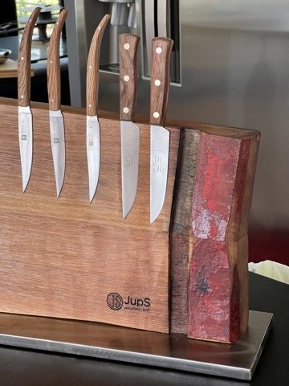
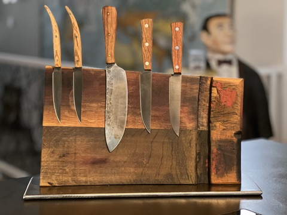

Küchenaccessoires · Handgefertigtes Unikat
Magnetischer Messerblock aus alten Fassdauben
ab 129 €
Preis inkl. MwSt.; aufgrund des Kleinunternehmerstatus wird gemäß § 19 UStG die MwSt. in der Rechnung nicht ausgewiesen.
Dieses Holz hat schon Wein reifen sehen: Der Messerblock besteht aus alten Fassdauben mit originaler Kennzeichnungsfarbe des Winzers.
In die Rückseite sind starke Scheibenmagnete (25×5 mm, Typ N45, vernickelt) versenkt und mit Originalholzstopfen verschlossen. Die Grundplatte ist eine massive, grob geschliffene Stahlplatte mit einer Dicke von 8–15 mm, je nach Ausführung – lediglich eingeölt, um Korrosion vorzubeugen. Auf der Unterseite sind Filzgleiter angebracht.
Das Eichenholz wurde mehrfach geschliffen und mit lebensmittelechtem Sonnenblumenöl geölt.
Die Fotos sind Beispiele. Bei Interesse sende ich Ihnen gerne Bilder der vorhandenen Messerblöcke mit Maßen und Preisen zu – kontaktieren Sie mich einfach per E-Mail.
Produktdetails
- Material
- Alte Fassdauben aus Eiche, Magnete, Stahlgrundplatte
- Magnete
- Scheibenmagnete 25×5 mm, Typ N45, vernickelt
- Maße
- Abmessungen auf Anfrage
- Zustand
- Neu – handgefertigtes Unikat
- Lieferumfang
- Messerblock, Stahlgrundplatte, 2 Schrauben (Lieferung zerlegt, einfache Montage)
- Kategorie
- Küchenaccessoires
Gut zu wissen
Die Haltekraft der Magnete ist von den Messern abhängig – bitte prüfen Sie vor dem Kauf, ob Ihre Messer magnetisch sind. Abgebildete Messer sind Deko und nicht Teil des Lieferumfangs.
Holz ist ein Naturprodukt: Wuchs, Farbe, Struktur und Maserung sind bei jedem Baum verschieden. Kleine Lunker, Verfärbungen oder nicht perfekte Kanten sind keine Qualitätsmängel, sondern Teil des Charakters.
Pflegetipp: Holz und Stahlplatte gelegentlich leicht einölen – das sieht beim Holz schön aus und verhindert beim Stahl Rostflecken.